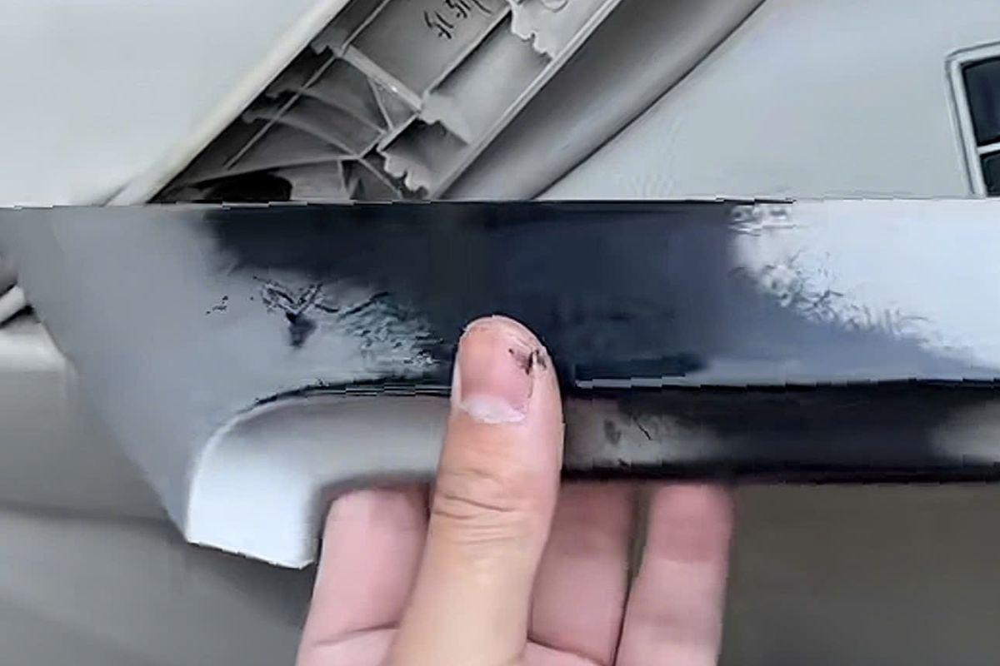

Sơn nhựa nội thất ô tô là gì?
Sơn nhựa nội thất là lớp hoàn thiện màu dành cho một số chi tiết nhựa trong khoang xe. Công việc này thường được cân nhắc khi bề mặt bạc màu, trầy xước, loang màu hoặc cần thay đổi màu tổng thể.

Không phải bề mặt nhựa nào cũng giống nhau
Các chi tiết có thể khác nhau về loại nhựa, độ cứng, kết cấu bề mặt và lớp phủ cũ. Vì vậy cần nhận diện bề mặt và thử trên vùng nhỏ trước khi thi công toàn bộ. Một quy trình dùng tốt cho chi tiết này chưa chắc phù hợp với chi tiết khác.
Khi nào nên phục hồi?
- Màu bề mặt bị bạc hoặc không còn đồng đều.
- Có vết trầy nhẹ nhưng kết cấu chi tiết vẫn ổn định.
- Lớp hoàn thiện cũ đã xuống cấp và cần được loại bỏ hoặc xử lý lại.
- Khách hàng muốn đổi màu sau khi đã đánh giá khả năng thi công.
Điều cần kiểm tra trước khi sơn
Cần kiểm tra chất bẩn, dầu dưỡng, silicon, lớp sơn cũ, mức độ hư hỏng và khả năng tháo lắp. Đây là các yếu tố ảnh hưởng trực tiếp đến độ bám và sự đồng đều của lớp hoàn thiện.
Dòng VPL của REVOX
VPL được REVOX giới thiệu cho nhu cầu phục hồi và hoàn thiện màu bề mặt nhựa nội thất ô tô. Sản phẩm có quy cách 1L giá 890.000₫ và 4L giá 3.450.000₫. Hãy gửi ảnh bề mặt và mã màu cần dùng để được tư vấn trước khi đặt hàng.